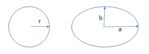
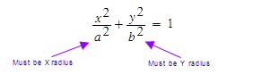

This equation is very similar to the one used to define a circle, and much of the discussion is omitted here to avoid duplication. See Basic equation of a circle and General equation of a circle as an introduction to this topic.
The only difference between the circle and the ellipse is that in an ellipse, there are two radius measures, one horizontally along the x-axis, the other vertically along the y-axis. Clearly, for a circle both these have the same value.

By convention, the y radius is usually called b and the x radius is called a.
If the ellipse is centered on the origin, ( its center at 0,0 ) the equation is
where
a is the radius along the x-axis ( * See radii note below )
b is the radius along the y-axis
Note that the equations on this page are true only for ellipses that are aligned with the coordinate plane, that is, where the major and minor axes are parallel to the coordinate system.
In the applet above, drag one of the four orange dots around the ellipse to resize it, and note how the equation changes to match.
Just as with the
circle equations,
we subtract offsets from the x and y terms to translate (or "move") the ellipse back to the origin.
So the full form of the equation is
where
a is the radius along the x-axis
b is the radius along the y-axis
h, k are the x,y coordinates of the ellipse's center.
In the applet above, drag the orange dot at the center to move the ellipse, and note how the equations change to match.
Start with the basic equation of a circle: Divide both sides by r2: Replace the radius with the a separate radius for the x and y axes:
In the applet above, click 'reset' and drag the right orange dot left until the two radii are the same. This is a circle, and you will get an equation that looks like where r is whatever radius you set up. If you multiply through by r2 you get which is the general equation of a circle. This demonstrates that a circle is just a special case of an ellipse.
Using trigonometry to find the points on the ellipse, we get another form of the equation. For more see Parametric equation of an ellipse
In many textbooks, the two radii are specified as being the semi-major and semi-minor axes. Recall that these are the longest and shortest radii of the ellipse respectively. The trouble with this is that if the ellipse is tall and narrow, they have to be reversed, so you wind up with two forms of the equations, one for tall thin ellipses and another for short wide ones.
Regardless of what you call these radii, remember that the x term must use the radius along the x-axis, and the y term must use the radius along the y-axis:
